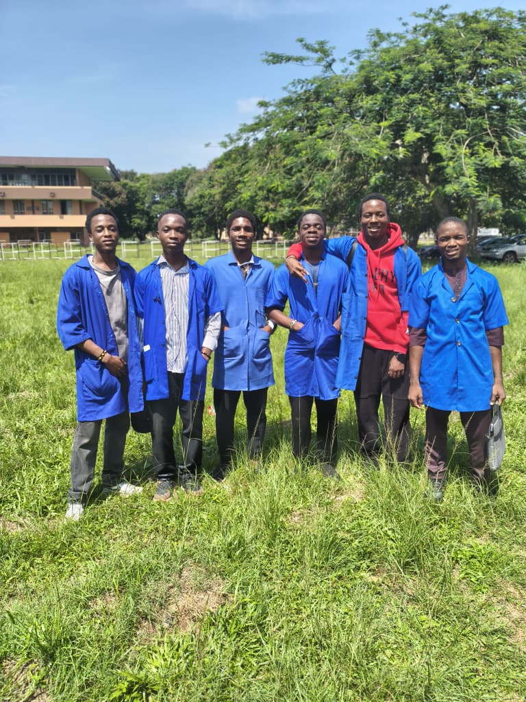
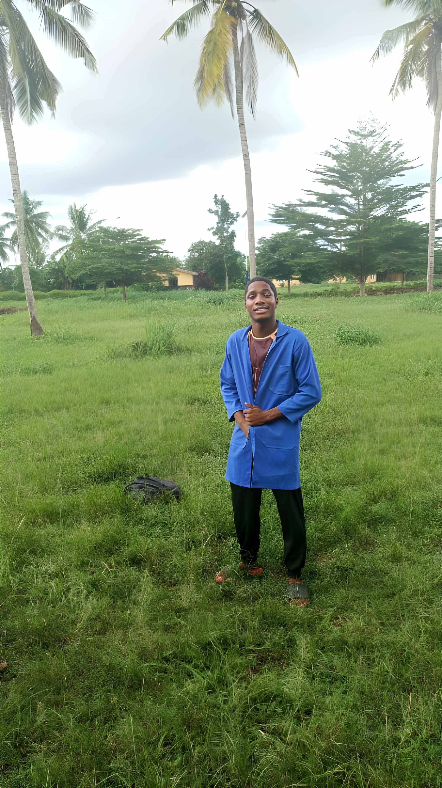
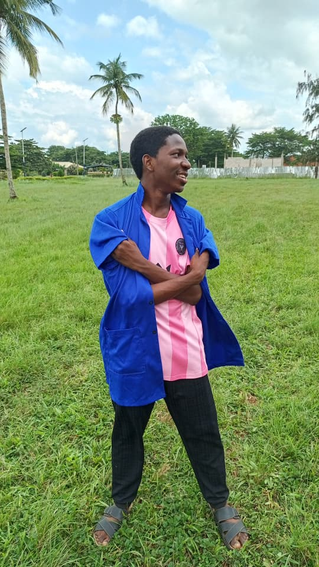
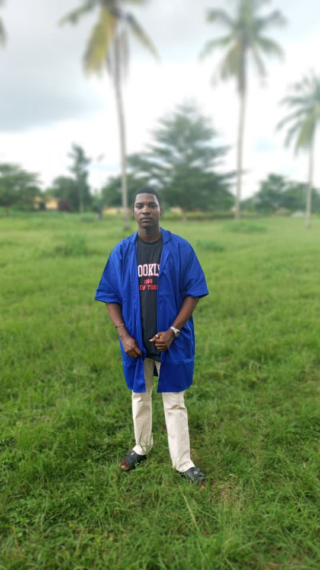
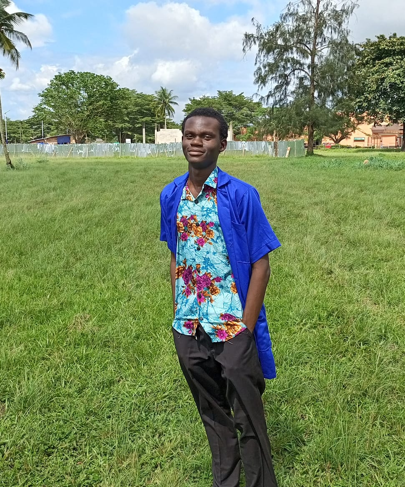

ABOUT US.
LabRoute, an institutional engineering repository, was initiated in 2026 to bridge the gap between complex laboratory coursework and accessible academic excellence. Born from the shared frustrations of engineering students navigating fragmented legacy data, this platform serves as a centralized hub for verifiable experimental records.
After a fortunate collaboration between a dedicated student development team, the repository gained momentum. Today, it stands as a testament to open academic sharing, ensuring that apparatus documentation, mathematical derivations, and procedural guidelines are preserved for future cohorts.
Our work makes sense only if it serves as a faithful ledger of scientific truth for the next generation.
”

Etini

Chris

Aika

Leonard
THE TEAM.
Building a seamless digital ledger requires precision. Our core development team consists of engineering undergraduates who understand exactly what students need during late-night report write-ups.
We knew that a standard file dump wouldn't suffice. The architecture had to be fast, the interface had to be intuitive, and the search had to be robust enough to filter through hundreds of ELA reports instantly.